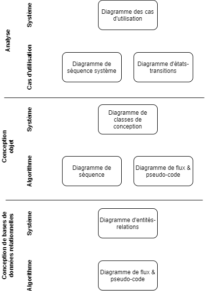

Le guide
La conception de logiciels est un processus long, complexe et divisé en plusieurs étapes afin de pouvoir traiter efficacement la grande quantité d’informations pertinentes au développement d’un système. Dans chacune des étapes, les fonctionnalités et les données du système sont considérées sous un nouvel angle. Comme mentionné dans plusieurs manuels de conception de logiciels, l’élément le plus important de la conception demeure la description textuelle. Cependant, celle-ci possède des limites, particulièrement au niveau de la synthèse d’information, de dépendances et de séquençage; l’utilisation de représentations graphiques permet de bien représenter ces informations.
Le présent guide se veut une présentation des normes à utiliser pour obtenir un diagramme et non un manuel présentant les techniques de la conception de logiciels. Quelques exemples d’applications à partir de situations réelles sont tout de même présentés pour aider à contextualiser l’utilisation des différentes notations. Des 13 types de diagramme UML, seulement 5 sont présentés dans ce guide : les 5 qui sont les plus appropriés dans un cours de conception logiciel de niveau collégial. En plus de ces 5 diagrammes, le diagramme d’entité-relation, toujours très utilisé dans le domaine de la modélisation des bases de données relationnelles, et la notation d'algorithme (diagramme de flux et pseudo-code) sont aussi présentés. Les diagrammes couverts dans ce guide sont :
- Diagramme de flux de données
- Diagramme de classe
- Diagramme d’entité-relation
- Diagramme de classes de conception
- Diagramme d’états-relations
- Diagramme des cas d’utilisation
- Diagramme de séquence système
Pourquoi ce guide au collégial ?
L’une des difficultés dans l’enseignement de l’informatique est la transmission des idées derrière les nombreuses abstractions utilisées. Il nous arrive très souvent comme enseignant de travailler très dur afin de vulgariser une idée qui est pourtant toute simple. Nous finissons bien souvent à gesticuler, reformuler et éventuellement esquisser une représentation graphique.
Pour l’élève, s’adapter aux diverses représentations hautement variables (parfois même entre les exemples d'une même personne) et diverses habitudes de notation représente un défi.
Pour l’élève, le standard de code UML peut être utilisé dans son milieu de travail futur;
Pour les enseignantes et les enseignants, ce guide se veut une référence rapide plutôt que d'avoir à rechercher dans divers livres ou normes exhaustives qui propose beaucoup plus que ce qui est nécessaire lors des apprentissages au collégial.
Situations d'utilisation des diagrammes
Trois situations peuvent requérir des modélisations graphiques dans la conception de système au collégial : l'analyse des besoins, la conception du système, la conception de la base de données. Pour chacune de ces trois situations, la modélisation peut intervenir à deux niveaux : un niveau global (le système) et un niveau fonctionnel (axé sur une partie d'un système, à savoir la tâche traitée).
La figure ci-dessous présente, pour chacune des situations les diagrammes à consulter pour chaque niveau de modélisation. Les onglets de navigation du site correspondent à chacune des situations.

Droits et distribution
Tout le matériel de ce site (sauf mention contraire) est sous licence Creative Commons 4.0 avec obligation d'attribution, interdiction de réutilisation à des fins commerciales et partage dans les mêmes conditions.
Alexandre Ouellet | 2025
 Documentation
Documentation